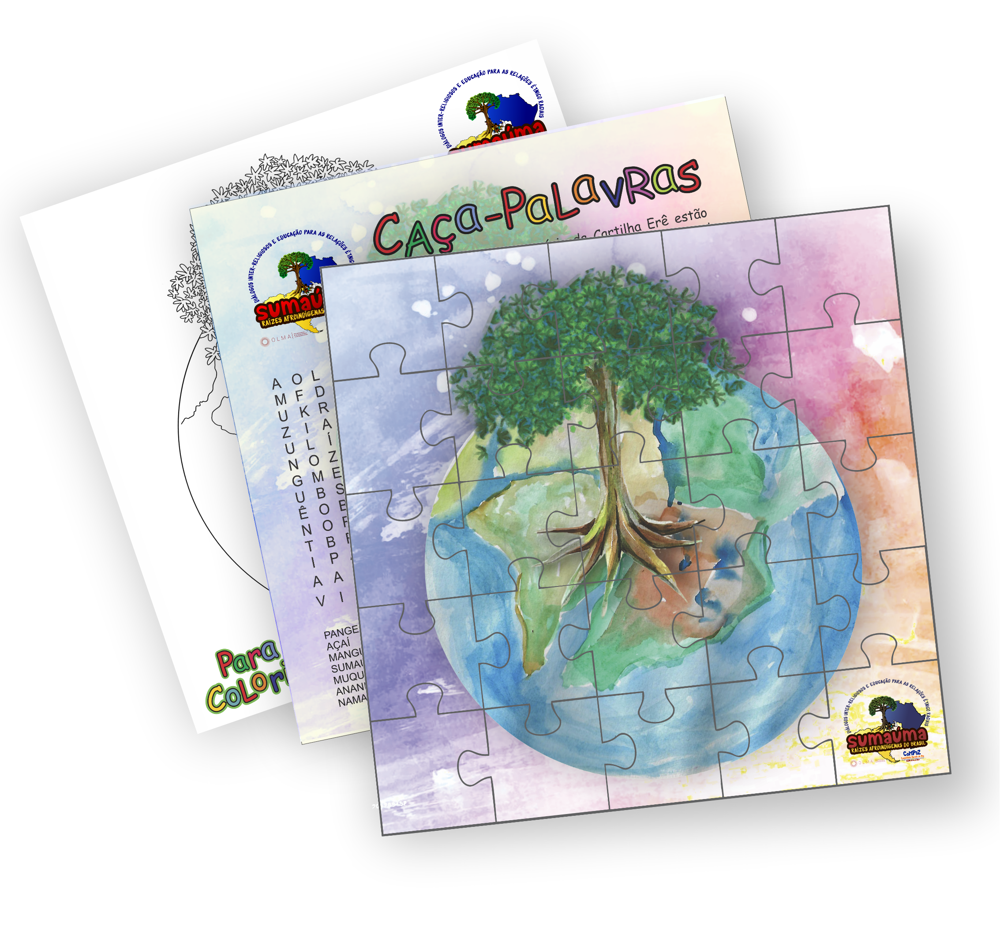

O projeto Sumaúma é uma idealização da Comunidade Kilombola Morada da Paz - Território de Mãe Preta CoMPaz que tem o Observatório de Justiça Socioambiental Luciano Mendes de Almeida - OLMA como seu principal parceiro para tornar este projeto possível, com o intuito de desenvolver um diálogo entre as diferentes culturas tradicionais em comunidades de terreiro, kilombolas, indígenas existentes no Brasil.
O Projeto leva o nome de uma árvore intercontinental, natural da América do Sul e África, tal árvore pode adquirir uma altura aproximada de 70 metros, suas raízes muito profundas, também é um grande manancial armazenador de água. CoMPaz levou o projeto para diversos cantos do país, através de intercâmbio, contando suas experiências, sua cultura, seu jeito de ser e viver aos povos que encontrou, estabelecendo rica troca.
O projeto resultou na publicação de uma cartilha e do conjunto de jogos “Trilha da Samaúma”, material fundamental para o fortalecimento das leis 10.639 e 11.645 sobre o ensino da cultura e história afro-brasileira e indígena.

O material foi disponibilizado para as comunidades e escolas das regiões para onde o projeto foi levado através dos intercâmbios.
